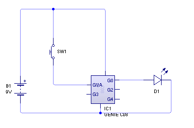
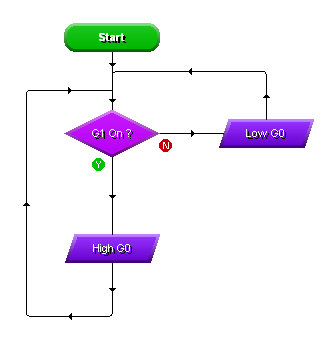
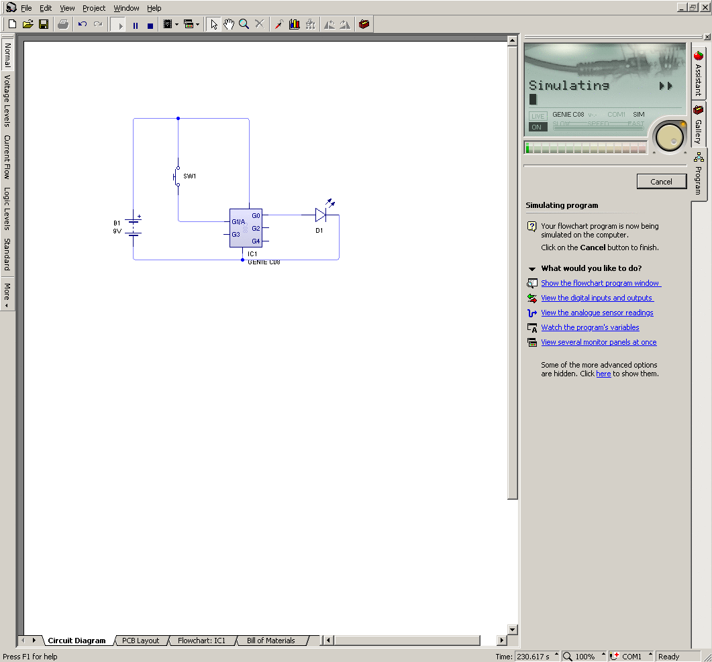
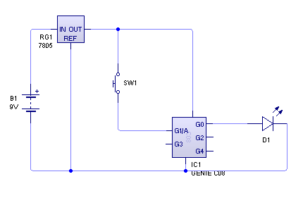
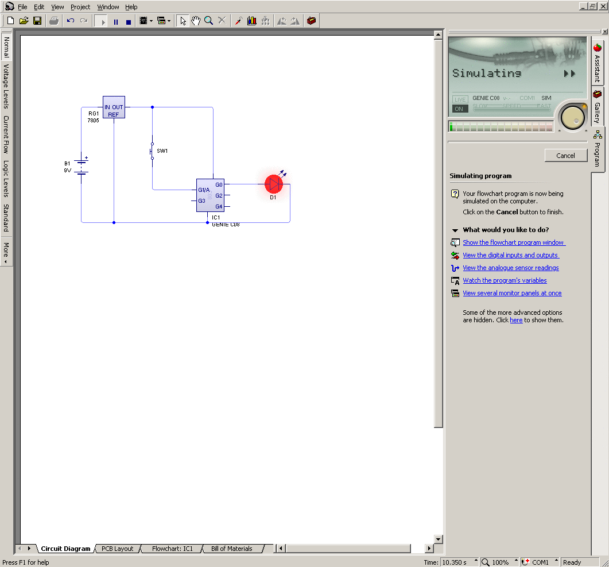
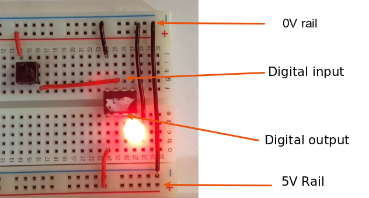
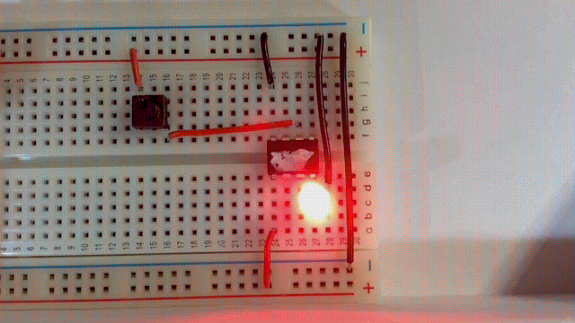
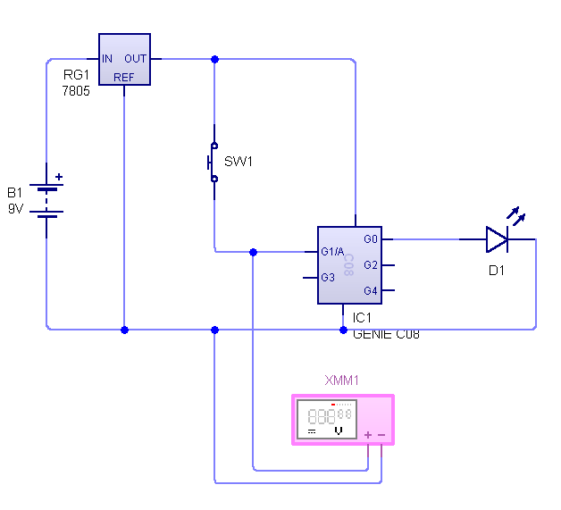
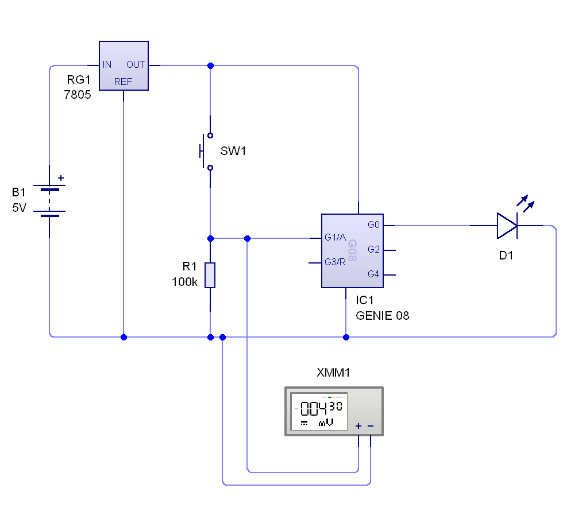
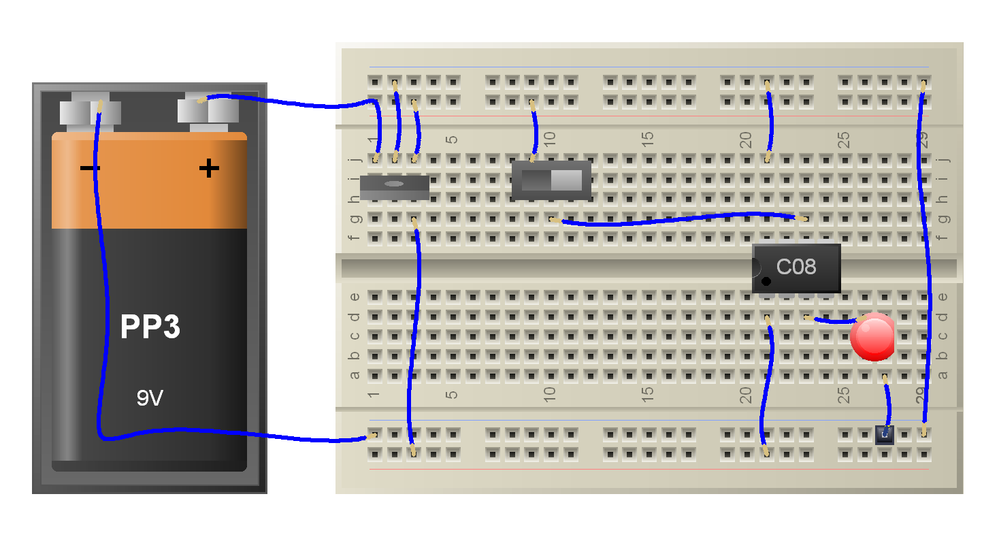

The Digital Die
1 The problem with Microcontrollers in the real world.
Learn It
- You should know that digital data is represented by 1s and 0s.
- We often regard 0 as being off and 1 as being on.
- So in a simple circuit, we could use a switch to control the digital data. When the switch is closed, current flows and therefore it is on. If the switch is open, no current flows and theefore it is off.
- We can use this knowledge to build a really simple circuit.
Build It
- We'll use circuit wizard to try and set up a simple digital circuit.
- We want to use a microcontroller (in this case a GENIE C08), to turn an LED on and off.
- We also want to use a 9V battery to power our circuit.
- Set up a circuit like the one shown below.

Test It
- We'll need a little program to go with our circuit, before we can test it out.
- Create a flowchart like the one shown below.

- Now flip back to the circuit diagram and test your circuit to make sure that it works.

Try It
- So in theory we now have a circuit where we can control an LED using a microcontroller.
- But the real world is not so simple.
- Go to
Project>Simulationand turn on Explosions. - Simulate your circuit again and see what happens.
Learn It
- It turns out that in the real world, GENIE cips don't like such high voltages.
- To make sure we don't destroy our chips, we need to make sure we keep the supplied voltage below 6V. 5V is always a safe bet.
Build It
- Getting 5V from batteries isn't easy. We could use 3 x 1.5V AA batteries to give us 4.5V, and that would probably work, but that would cost us more money.
- Instead we'll use a component called a
Voltage Regulatorto reduce the voltage we supply to the GENIE chip. - You can find the Voltage Regulator component in the Power Supplies menu on Circuit Wizard. It defaults to the 7805, which is the one we want to use.

Test It
- You can now run your simulation again and everything is awesome…

- Or is it?
- Although the circuit may appear to work in Circuit Wizard, in the real world this circuit would be very tempremental, and may not work at all.
- Look at the breadboard below, showing the set up of the circuit.

- At first it looks okay, but notice the that LED is illuminated. This means that the output pin on the GENIE chip is high, even when the switch hasn't been closed.
- Now look at the video below, and you'll see that everything is not quite so awesome…

- Whether the switch is open or closed, the LED stays illuminated.
Badge It - Silver
- Write up your findings so far. Make sure you can answer the following questions, and use screen shots of your own circuit to help your explanation.
- What is digital data?
- Why can't we use 9V with a GENIE chip?
- What does a Voltage Regulator do?
2 Pull Down Resistors
Learn It
- Whenever an electrical engineer has a bug in her circuit, she'll grab her multimeter to see what's going on.
- You can find a
digital multimeterin the Virtual Instruments menu. - We'll place one of the probes on the digital input and the other probe on the ground rail.

- Simulate your circuit again and note down the voltage readings when the switch is open and closed.
Learn It
- Hopefully you can see that even when the switch is open, there is a Potential Difference between the input pin and the 0V rail.
- Microcontrollers in reality treat voltage ranges as being eqivalent to a 0 or a 1.
- For a pin to be considered high, the voltage between the pin and ground should be 0.8 x the supply voltage.
- For this circuit that means the GENIE chip will read a pin as high (1) when the potential difference is above 0.8 x 5V = 4V
- For a pin to be considered low, the voltage between the pin and ground should be 0.2 x the supply voltage.
- For this circuit that means the GENIE chip will read a pin as low (0) when the potential difference is below 0.2 x 5V = 1V
- As you can see from your readings, the voltage isn't clearly above 4V or below 1V. This means the microcontroller doesn't know if the pin is high or low. We describe this as being a floating pin, and it can cause all kinds of unpredictable behaviour.
Try It
- Luckily there is a solution. Place a 10kΩ resistor between the pin and the ground rail, as shown below.

- Now you'll see that the input voltage when the switch is close is very low (the reading should have changed to mV which means 1000ths of a Volt.)
- This type of resistor is called a pull down resistor and ensures that the GENIE chip reads a logical 0 when the swithch is open and a logical 1 when the switch is closed.
Learn It
- Let's see if the 10kΩ resistor helps us on our real circuit.

- Once again everything is awesome…
Badge It - Gold
- Write up your findings so far. Makr sure you can answer the following questions, and use screen shots of your circuit to help your explanation.
- What voltages are required to give a logical 0 or 1 on an input pin for a GENIE chip?
- What is meant by a floating pin?
- How does a pull down resistor prevent a pin from floating?
Badge It - Platinum
- You can use a breadboard to build the circuit shown in the videos, and test out what happens when you add a pull down resistor yourself.
- Here is a diagram that can help you to build the board without a pulldown resistor

- Build the board and use a pre-programmed chip from your teacher to test it out.
- Think where the pulldown resistor would go and then add it to the circuit.
- Test it out again.
- If you build it take photos or video of it in operation, with or without a pull down resistor.